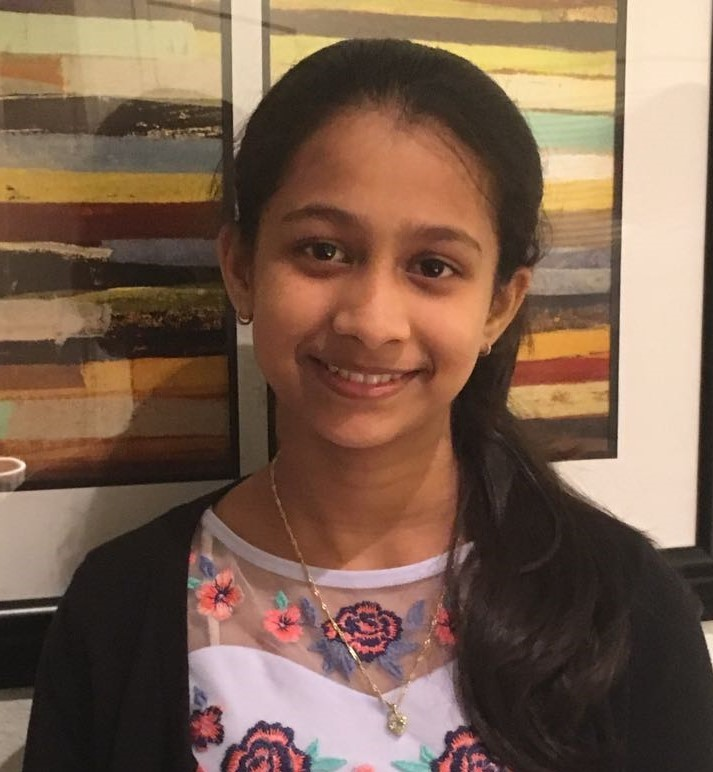
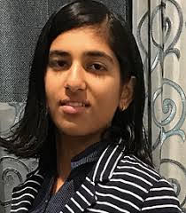
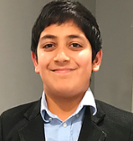
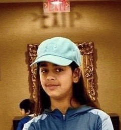
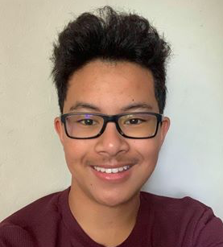

Co-Founders
Saumya Verma
I am a rising junior attending Lynbrook High School, and I love to code in Java, Python, and other programming languages. I am very passionate about computer science, and I take a lot of interest in subjects related to artificial intelligence and machine learning. In addition, I am very passionate about teaching and sharing my knowledge with other students. Since an early age, I have always enjoyed teaching my little sister new subjects that I had learned. In my freshman year, I was able to take my passion to the next level by instructing elementary school students on different topics related to science and technology. During this pandemic, I would like to continue helping others by enabling more students to have the opportunity to explore the field of computer science. Through ChiCode, I hope to be able to reach out to more people across the world and present them with our online courses. I am thrilled to be one of the co-founders at ChiCode, and I am looking forward to making an impact through my contribution.
saumya@chicode.tech
Nishi Kaura
My vision in cofounding ChiCode is to allow children and young adults to gain access to computer literacy. This idea was first born when I visited an orphanage in developing country while in elementary school and noticed that many children don’t have access to basic computer literacy. Later in middle school, I revisited the orphanage after hosting a fundraiser to donate laptops and taught the children basic computer literacy. During my freshman year, I founded A-Z Hacks, a non profit organization and hosted a 100 hacker plus hackathon in partnership with Women in Tech at LinkedIn in an effort to promote girls interest in technology. During COVID 19 pandemic, I want to continue my efforts to help children and young adults to learn/improve their computer skills safely by providing them access to online computer courses. Creating online courses is my humble effort to use my passion for Computer Science to make computer literacy accessible to aspiring students.
nishi@chicode.tech
Rahul Kaura
Since an early age, I have been passionate about technology and it’s role to solve real life problems. It’s been my mission to provide a platform for other students like me to come up with new technology ideas to help the community in general. To accomplish this, I founded a student-led non-profit organization, A-Z Hacks. A-Z Hacks provided platform for 100+ students to encourage coders of all skill levels to innovate and build projects that can revolutionize and improve lives. For this, I partnered with Fortune 500 company LinkedIn among others such as NOVA, Magoosh, and students from Bay area schools. Additionally, I am an intern at Stria Blind, sponsored by Fortune 500 company Google, a company which is dedicated to helping the blind community find their way in the world by creating an innovative walking stick. While founding Chicode, my intent is to leverage my leadership skills and experience to provide free online technical courses to local and international students especially during the COVID 19 Pandemic. I am excited to serve as co-founder of ChiCode.
rahul@chicode.tech
International Chapters
Vikram Pasricha
Chapter Head of Public Outreach - India
 Fascinated and mesmerized by video games since my childhood, it took me a while to graduate to computer games. As I watched my cousin pursuing the coveted computer science engineering; little did I realize that I was bridging the gap between my passion and profession. Macros and cheat codes slowly paved the way to coding. Selection of my elder brother Vikrant in computer science branch acted as a catalyst to ignite and inculcate the computer bug in me. Presently on the threshold of entering engineering college in computer science.
Fascinated and mesmerized by video games since my childhood, it took me a while to graduate to computer games. As I watched my cousin pursuing the coveted computer science engineering; little did I realize that I was bridging the gap between my passion and profession. Macros and cheat codes slowly paved the way to coding. Selection of my elder brother Vikrant in computer science branch acted as a catalyst to ignite and inculcate the computer bug in me. Presently on the threshold of entering engineering college in computer science.
vikram@chicode.tech
Shantae Morgan
Chapter Head of Public Outreach - Jamaica
 I am very privileged and honored to be apart of an initiative that is catered towards the betterment of people. We live in an era where current, as well as future developments, have foundations well-rooted in technology, therefore, I am of the humble opinion that it is essential for everyone to gain basic computer literacy. I am very passionate about writing and stories. I just enjoy watching people being happy. The world we live in today has many downfalls and as of such I’m committed to any cause that will enable some of the problems to be solved. I am ecstatic to be a chapter head at Chicode where we tackle problems one byte at a time.
I am very privileged and honored to be apart of an initiative that is catered towards the betterment of people. We live in an era where current, as well as future developments, have foundations well-rooted in technology, therefore, I am of the humble opinion that it is essential for everyone to gain basic computer literacy. I am very passionate about writing and stories. I just enjoy watching people being happy. The world we live in today has many downfalls and as of such I’m committed to any cause that will enable some of the problems to be solved. I am ecstatic to be a chapter head at Chicode where we tackle problems one byte at a time.
shantae@chicode.tech
Khome Wood
Chapter Head of Public Outreach - Jamaica
 It is really a pleasure of mine to be a part of such a beneficial initiative that seeks to help out individuals in need. In the age we are living, technology is very crucial to the development of our society by personalizing our lives.I also believe that this organization will also be of benefit to myself and that great things will come from this. I love helping people and it brings me joy to do so. Again it is my pleasure to be a Chapter head for Chicode where tech is our thing.
It is really a pleasure of mine to be a part of such a beneficial initiative that seeks to help out individuals in need. In the age we are living, technology is very crucial to the development of our society by personalizing our lives.I also believe that this organization will also be of benefit to myself and that great things will come from this. I love helping people and it brings me joy to do so. Again it is my pleasure to be a Chapter head for Chicode where tech is our thing.
khome@chicode.tech
National Chapters
Navya Bhandari
Chapter Head of Public Outreach - Washington
I am a middle school student in Redmond Middle School who has taken an interest in computer programming. I love to learn and code in Python, JavaScript, and other programming languages. I am fully aware of the fact that a lot of students, like me, would like to pursue the idea of computer programing. But some people, especially during this COVID-19 pandemic, can’t access platforms to build on their passion. The initiative of ChiCode is to help all of those people, which would turn out to be very beneficial for some students. I am very glad that organizations like ChiCode are rising to help those people. Some of those students could be the very ones that turn out to be the professionals that inspire others. The only thing those lucky would-be programmers need is a spark, which ChiCode would be providing. I am in luck that I get to help out in an organization like ChiCode! I look forward to – and am more than delighted to – helping ChiCode in its motive!
navya@chicode.tech
Rushil Chandrupatla
Chapter Head of Public Outreach - California
I am a junior at Evergreen Valley High School. I have a deep passion for computer science and coding, and I often attend hackathons. My motto is that hard work can make a big impact. In addition, I am a Life Scout in Boy Scouts of America and the president in my school's Computer Science Honor Society. I will definitely use the skills learned in both of these areas to work towards my goals.
rushil@chicode.tech
Marketing Directors
James Gerali
Marketing Director - California
Video games and computers have been a huge part of my childhood. Whenever I wasn’t playing video games, I was using a computer, and whenever I wasn’t using a computer, I was playing video games. I grew more and more attached to computers and technology as a whole and grew an interest in learning computer science. Having friends that shared the same interests made me more motivated to set goals in computer science that I could work toward. I am happy to be a part of ChiCode because it can help students like me learn how to gain a deeper understanding in computer science. Whether it is learning how to code for fun, or trying to make computer science your career, I know that together we can make strides toward achieving our goals. I would love nothing more than to hone my skills in computer science and help others along the way.
james@chicode.tech
Namya Bhandari
Marketing Director - India
I am a middle school student pursuing my studies in Chirec International School, India. ChiCode is a wonderful platform to work on and contribute back to society. It motivates teenagers as well as children to grow an interest towards the field of Information Technology especially those with lower Economic Background and no easy access to tutor. The ChiCompetition is a magnificent idea to motivate students about their field of improvement as well as their achievements. I am elated to be chosen to help such a bodacious platform. I will surely put my best foot forward in helping ChiCode.
namya@chicode.tech